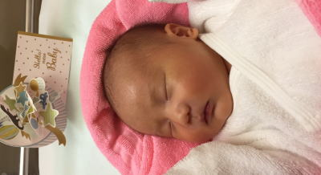
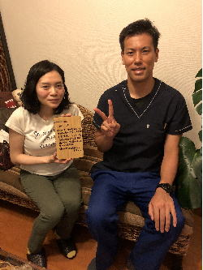
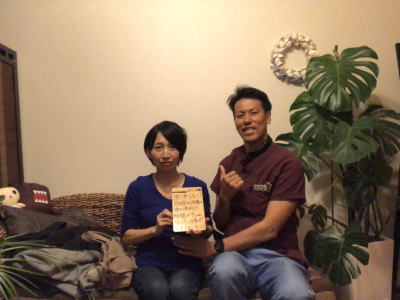
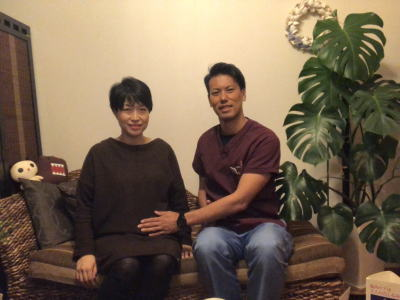
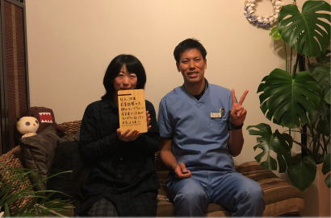
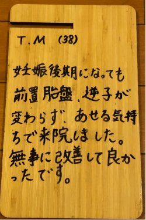
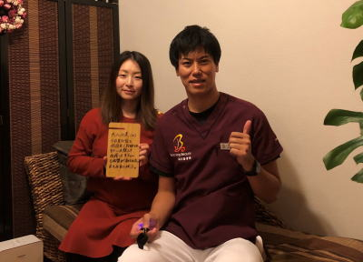

前置胎盤、低置胎盤は安静にしていても治るものではありません。鍼灸治療により胎盤が治る可能性が大きく上がります。
電話でのご予約・お問い合わせはTEL.03-6413-7803
〒154-0014 東京都世田谷区新町3-21-1さくらウェルガーデン301号室
前置胎盤の施術を受けた患者様の声PLACENTA PREVIA treatment
日本で唯一の、前置胎盤・低置胎盤 専門鍼灸院！！
【前置胎盤が治った患者様の声】4、全前置胎盤 37歳 M,K様 第2子
『鍼灸施術回数12回』
第２子の前置胎盤治療でお世話になりました。
私は第１子のときも前置胎盤で、あまり危機感をもたずにそのままにしていたところ、 ２８週で全前置胎盤の診断をうけ、そこから２カ月管理入院となり、前置胎盤のまま出産となりました。
前置胎盤は、珍しい症例なので第２子は大丈夫だろうと思っていたところ、１０週くらいで胎盤が子宮の出口にかかっているという指摘をうけ、 今回は上の子もいるので２か月も入院はできず、なんとかして胎盤の位置をあげたいと思い、治療をはじめることにしました。
週２～３回の通院と自宅での生活習慣の指導を受け、その通りに過ごしました。 病院の先生には、「けっこうしっかりと胎盤が子宮の出口にかかっている」 「今回は子宮をとることになるかも」と散々怖いことを言われていましたが、大宮先生は、「大丈夫です。みなさん同じことを言われていますよ」 と前向きに励ましてくださり、心配を取り除いてくれました。
また、毎回はじめに「体の調子はどうですか？」と聞いてくださり、 そのときの症状に合わせて施術内容も少し変えたり柔軟に対応してくださいます。
驚いたのは、つわりの症状がぶり返してしまい、何を食べても戻してしまうということを相談したところ、 それにあわせた施術をしてくださり、翌日には症状が緩和し、朝ごはんが問題なく食べれるようになったことです。
これには、即効性に驚きました。
通い始めて１カ月後の１５週の検診で、胎盤は子宮の出口から1.3㎝離れた低置胎盤の状態になり、病院の先生にも「管理入院はさけられるかも・・」 言われ、２か月後の２０週の検診では、2.7cm離れ、「特に胎盤の位置は問題ない」といわれるまでになりました。
第１子のときには全く胎盤が動かなかったのでこれにはかなり驚きました。
病院では、胎盤を上げる方法は特に無く、自然にあがってくれるのを待つしかないといわれてしまいますが、 鍼灸治療と生活習慣の改善で胎盤が上がらず、前置胎盤のまま出産を迎える可能性も十分にあります。
（第１子の出産の時がそうでした。）
大宮先生を信頼して治療に通っていれば必ず良い結果が出ます。
胎盤の位置で不安になっている方は是非大宮先生に相談することをおすすめします！
5、辺縁部前置胎盤 35歳 M.I様 第2子
『鍼灸施術回数3回』
妊娠20週と6日の時に病院の先生に前置胎盤の可能性があると言われ、ネットで検索して24週でこちらに来院しました。
5週1回目の治療後に病院の検診で先生から胎盤が少し動いたので、このままいけば正常分娩もいけるかもと言って頂いた。その後、２７週３回目の鍼治療後の病院の検診で前置胎盤がすっかり治っていました。
3回の治療でこんなに良くなったので病院の先生も驚かれていました。
鍼は全く初めてで恐かったけど、受けてみたら全く痛みを感じなくて鍼をうっているのにも気づかないほどでした。
子供の頃に膝をやけどしてケロイドになっていたのですが、そこが原因だとこちらの院長先生に治療してもらいました。やけどと前置胎盤が関係あるなんて体は全部繋がっているのだと驚きました。無事男の子を出産できました。
3人目も検討中なのでまた困った時は宜しくお願いします。
6、辺縁部前置胎盤、入眠障害 30歳 Y.S様 第3子
『鍼灸施術回数9回』
19週で前置胎盤の可能性があると病院の先生に言われて、安静にしていれば治ることもありますので特に行うことはありませんと言われました。
私は心配症のため不安で仕方なく、前置胎盤をネットで調べると、母親も赤ちゃんも死んでしまうことがあるハイリスクの出産と書いてあってとても不安になり、もともと入眠障害があったので色々考えてしまって余計に寝られなくなってしまいました。
そこで、治療法がないか色々調べている時にこちらの鍼灸院に辿り着き来院することにしました。
こちらの院長先生に相談すると『体の状態すべてを良くすることが前置胎盤の治療になる』と話されていて、妊娠してから悩んでいた便秘、お腹の張り、腰痛、入眠障害などすべての不具合が治療可能との事でした。
通っていくうちにだんだん体も楽になり、入眠障害も治まって来ました。
9回目に治療後に病院の先生に診てもらったところ前置胎盤は全く問題が無い状態まで改善していました。頸管の長さも問題なく普通分娩での出産が可能との事でした。
院長先生、いつもありがとうございます。
メンタルの指導から色々な症状を診て頂いて本当に助かります。
妊娠中は色々な不具合がでるので、薬ではなく鍼灸で対応してもらえるのは妊婦としては大変助かります。
今後も出産までは安産の治療と体のメンテナンスとして伺うつもりですのでよろしくお願いします。
7、辺縁部前置胎盤 37歳 E,H様 第2子
『鍼灸施術回数3回』
病院で23週の検診の時に前置胎盤が見つかりました。
病院の先生は治る事もありますから心配しないで大丈夫ですよと言われたのですが、心配になりネットで前置胎盤の事を調べてみると恐いことしか書いてありませんでした。
そのため、とても不安になり前置胎盤を治す方法はないかと調べているとこちらの治療院にたどり着きました。不安であったのと無料相談があるとの事だったのでとりあえず相談してみようと思いすぐに電話で相談をしてみました。
すると、前置胎盤も適切な治療をすることにより治る事が多いですとの言葉を貰えたので、何もしないよりも何かした方がよいと思い治療に通う事にしました。
鍼灸治療は初めてで恐かったのですが、特に痛くもなくお灸は大変気持ちのよい物なんだと実感できました。妊婦でお腹も大きい状態で週1回の治療に遠方から通うのはとても大変でしたが、なんと2回目の検診の際に少し胎盤が動いて少し子宮にかかっているだけになったのです。
その後、3回目の治療後の4日後位に不正出血があったので心配になり病院に行くと前置胎盤は全く問題ありませんと言われました。また、不正出血も買い物で歩きすぎた事が原因だったようです。
3回で治ってしまったのでとても驚きです。
産後も産後の姿勢矯正をしに通うつもりです。ありがとうございました。
前置胎盤で悩んでいる方は自分で色々検索して不安になるよりこちらの先生に相談すると心配も減ると思いますし適切なアドバイスをもらえるので相談するといいですよ。
8、低置胎盤 35歳 K,M様 初産
『鍼灸施術回数4回』
25週の時に低置胎盤と言われて28週で胎盤の位置が全く変化なかったため産婦人科の先生の紹介でこちらに伺うことにしました。
実は後で気づいたのですが友達も一人目の子の時に前置胎盤だったらしく、こちらの鍼灸院に通って治ったという事実がわかり「前置胎盤だったんだ」ということと「友達もここに来ていたんだ」とビックリしました。
その子は栃木に住んでいる子だったのでまさか桜新町に来ていたとは・・・。
口コミにあるようにこちらの先生は脈を診ただけで、疲れやすいでしょう、胃腸が弱っていますね、便秘気味ですねなど何も話さないうちからお見通しという感じで凄かったです。
私は若いか頃から便秘がちですし、ピロリ菌にも2回感染したことがあるため胃腸炎になりやすい体質なんです。
実際、鍼は怖かったのですが全く何をされているかわからない感じで、温かくて気持ちがよいまま治療が終わる感じです。
先生は日常の健康指導から食事管理、メンタル指導まで色々して頂けるのでこちらの鍼灸院に通うと元気になって帰れる感じがします。
鍼灸治療2回目の後に産婦人科に行くと今まで1ヶ月間全く動かなかった胎盤が6mm動いていたのです。すぐに結果が出てビックリしました。
その後、鍼灸治療4回目の後に産婦人科に行くと胎盤の位置が全く問題なくなっていました。
私はどうしても自然妊娠がしたくて、転移先の病院にはどうしても行きたくなかったのです。
友達や妊婦仲間に話を聞くと転移先の産婦人科の病院の評判が悪いからです。
4回目の鍼灸治療後に胎盤の位置が完全に治っていないと私が行きたくない病院に転移が決定することになっていたのです。そのため、こちらの鍼灸院の先生にも転移したくない事を話していたので、先生も『どうにかします』と言って頑張ってくれたおかげで胎盤が動いたのだと思います。
先生ありがとうございました。
前置胎盤で悩んでいる多くの方にこちらの鍼灸院の素晴らしさを知って頂きたいです。
9、低置胎盤 28歳 S,S様 第2子
『鍼灸施術回数2回』
12週の病院の検診の時に胎盤の位置が少し低いね~と病院の先生に言われました。
病院の先生は『そのうち動くから大丈夫だよ！！』と言うのであまり気にしていませんでしたが、25週の検診でも胎盤の位置が低くく、このまま胎盤に変化がないと帝王切開の可能性があることを言われてしまいした。
心配になり自宅で低置胎盤を調べてみると、エコーのない時代は100％母親が死んでしまう病気など心配になることしか書いてありません。
調べているうちに鍼灸が効くというのがわかり、こちらの鍼灸院にすぐに無料相談にてお電話しました。
鍼灸治療は第一子の時に肩が張って辛かった時に一度行った事ありました。
そのため、鍼灸に対する嫌なイメージは全くありませんでした。
こちらの鍼灸治療は最初の鍼灸院と比べて全く痛くもなく大変気持ちのよいものでした。
自宅での生活や食事、仕事中に注意することなども細かく指導を受けました。
こちらの鍼灸院で2回の鍼灸治療後、病院の27週検診があり期待せずに行くと、何と胎盤が3ｃｍ以上も子宮口から離れていて問題なく自然分娩ができるとのことでした。
今まで全く胎盤が動かなかったのに2回の治療で治ってしまったので鍼ってスゴイんだな~と思いました。
先生ありがとうございまいた。
産後の骨盤矯正も是非よろしくお願いします。
10、全前置胎盤 36歳 S,K様 第１子
『鍼灸施術回数24回』
前置胎盤と診察で言われて、出血の可能性などなど色々話を聞きました。 その後、上がる可能性もあるとの事で、次の検診でドキドキでしたが、やはり、少しは上がったのですが、やはり1〜1.5cm で低置胎盤との事。それが、29週目。
前置胎盤と診察で言われて、出血の可能性などなど色々話を聞きました。 その後、上がる可能性もあるとの事で、次の検診でドキドキでしたが、やはり、少しは上がったのですが、やはり1〜1.5cm で低置胎盤との事。それが、29週目。
経膣分娩を希望していた私は、鍼やお灸など、何か頑張れる事があるのではないかと、諦めきれずネットからのサイトを見つけ、病院にて診断を受けたその日にTeachingBeautyお電話しました。
まだ間に合う！
との事で、そこから治療に専念しました！
通う事と、自宅でのお灸。
先生のご指導をしっかり行いました。
それから、33週の検診でも胎盤は上がらず、諦めて、帝王切開で挑もう！と、産婦人科でも決めたその後、34 週目の検診で、胎盤が上がっており、
これは、経膣分娩できるかも！と病院の先生に言われました。ビックリでした！！
出産時、出血の恐れがあるのと、途中で、帝王切開になるかも。との事で、自己血輸血に2度通いましが、とにかく経膣分娩できる可能性が出た事が嬉しく信じられませんでした。
安静にしていたわけでもなく、新幹線で、移動もしていたし、リラックスして、普通に過ごしてましたが、先生から言われたアドバイスは必ず毎日欠かさずやってました。
結果、19時間の末、経膣分娩でき、元気な3370kgの男の子を出産する事が出来ました。
諦めないキッカケを作ってくださり、明確なアドバイスと治療をしてくださったTeachingBeautyの大宮先生のおかげです。
本当にありがとうございました。
どんな形でも元気な赤ちゃんが生まれてくれたら。と思いますが、諦めないで良かったです。本当にありがとうございました。

11、辺縁部前置胎盤 40歳 K，M様 第2子
『鍼灸施術回数6回』
30週目の検診で前置胎盤との診断を受けて3０週と4日目にこちらの鍼灸院に来院しました。
病院の先生からは34週目から3週間の入院と言われてしまっていて、1人目の子供を預ける所がないためどうしても入院したくなかった思いもあり藁にもすがる思いでこちらの鍼灸院に問い合わせをしました。
『日数がギリギリですが頑張ってみましょう！』と院長先生がお話してくださり鍼灸治療で通うことになりました。
特に今まで健康で過ごしていただけに前置胎盤と聞くとかなりショックが大きかったです。悪いこともしてこなかったのに・・・。
入院まで3週間しか日数がなかったけど、6回の治療を行って見事、前置胎盤が治りました。妊娠中に遠くから通うのは大変だったけど胎盤の位置が治ったのと入院しなくてよくなった事がとてもうれしく思います。
周りに前置胎盤の知り合いがいなくてとても不安でしたが、こちらの鍼灸院には前置胎盤で通っている方も多く、仲間が沢山いるのだと少し安心しました。
こちらの鍼灸院で以前、前置胎盤が治った方患者さんとお話させてもらったこともありました。
前置胎盤も治る病気のようです。ぜひ、諦めず頑張って下さい。
12、全前置胎盤・股関節痛 30歳 S,A様 第2子
『鍼灸施術回数10回』
私は今回、2回目の妊娠で初めて全置前置胎盤と言われました。
週数は17～18週で発見されました。
私は今回、2回目の妊娠で初めて全置前置胎盤と言われました。
週数は17～18週で発見されました。
そこから色々調べれば調べる程のとてつもない不安と、入院や帝王切開になったら第1子もまだ幼い中どうしたら‥。と藁をもすがる気持ちでTeachingBeauty鍼灸整骨院のホームページを発見しました。
幸い自宅からも近く、少しでも良くなればという思いで25週の時に受診しました。
自律神経がやられていると指摘され、自宅での生活指導と食事指導にとても注意して頑張りました。
7回目の治療後の検診で前置胎盤は正常な範囲まで上がったのですが、静脈瘤が子宮口を蓋している状態でこのままではどのみち帝王切開と言われました。
大宮先生に相談すると静脈瘤も問題なく動くでしょうとのことで頑張りました。
大宮先生に相談すると静脈瘤も問題なく動くでしょうとのことで頑張りました。
そうして10回鍼灸院に通って病院に行ったある日‥胎盤も静脈瘤も上にググっと上がっていて、産婦人科の先生も驚いていらっしゃいました！
入院、帝王切開を免れたのは、大宮先生のお陰です！！
幼い子どもを連れて通うのは気が引けましたがいつも大宮先生は子どものことも気に掛けてくださり、時には施術中ずっと抱っこして下さったり、お相手して頂き、本当に助かりました。
引っ越してしまい遠くなり、里帰りしてしまったため今は通えてませんが、また何かあったらお世話になりたいと思います！
本当にありがとうございました。
前置胎盤でお困りの方は大宮先生に相談するといいですよ。
私の周りには2人の友達が前置胎盤で切迫早産になっているのを聞いていたので、ものすごく不安でしたので・・・。
前置胎盤でお困りの方は大宮先生に相談するといいですよ。
私の周りには2人の友達が前置胎盤で切迫早産になっているのを聞いていたので、ものすごく不安でしたので・・・。
13、部分前置胎盤 38歳 M,S様 第2子
『鍼灸施術回数3回』
妊娠中期である20週の頃の妊婦検診で、部分前置胎盤と診断され、とても不安で何とか治したいと思っていたところ、こちらのTeaching＆Beauty鍼灸整骨院さんを知りお世話になりました。
院内は落ち着いた雰囲気で、リラックスできそうな印象でした。
初回の日、先生は丁寧に話を聞いてくださり、前置胎盤になる原因や施術についての内容などを説明してくださいました。
先生の「今までも沢山の前置胎盤の患者さんが治っていますよ。頑張りましょう」の言葉はとても心強かったです。
週に1度、3回程通ったところ、次の妊婦検診で前置胎盤が治り、本当に夢のように嬉しかったです。
さらに施術のおかげもあってか、とても安産で出産時の出血も少なく、元気な赤ちゃんを産む事ができました。
母子共に元気に出産を迎えられたのも大宮先生のおかげです。
本当にありがとうございました。
14、低置胎盤 32歳 M,S様 第1子 （獣医師）
『鍼灸施術回数14回』
私は妊娠14週目の産婦人科の定期検診時に、低置胎盤だと診断されました。
医師からは「やれることはないから、胎盤の位置が今後子宮口から離れていくのを待つしかない。25週目の時に再度位置をチェックして、位置が正常まで離れていなければ、総合病院に紹介して帝王切開になる」と伝えられました。
私は以前膝の靭帯の手術でメスを入れた際に、その影響で膝周りに癒着が起こり、1年後に癒着を取り除く手術を経験をしているため、帝王切開で体にメスを入れるということにとても抵抗がありました。
医師にはやれることはないと言われましたが、何かしらあるはずだと考え探し、teachingbeautyさんに辿り着きました。
teachingbeauty院長の大宮先生からは、早い時期であればあるほど治る確率が高いと教えて頂き、すぐに予約を取り付けて頂きました。
初回の診察で、私の体質の悪い部分を教えていただき私のようなタイプの人は胎盤の位置が悪くなりやすいことを教えて頂きました。
治療としては、経過をみながらteachingbeautyさんで週に1度全身に鍼と灸をして頂き、その時の状態に応じ追加で皮内鍼や骨盤矯正を行うことになりました。
また、家での食事習慣や生活指導などを教えて頂きました。
ある日、大宮先生に検診の結果はどうでしたか？と聞かれ。
「うちの病院は25週にならないと胎盤を見てくれないんです」と話すと、「他の胎盤の患者さんは毎回検診のたびに調べてもらっている」ということを聞き、電話にて改めて病院に連絡して胎盤を見てくれないかと受付の方に懇願し無理やり予約を取ってもらい再度検診に行ってきました。
それはちょうど、teachingbeautyさんには5回通い、妊娠19週目に入った頃です。
産婦人科の医師には、｢心配とのことだから位置チェックするけど、今の時期にみても変わってないと思うよ。本当なら、あと2ヶ月は待ってから診てみないと。」と、嫌味を言われてしまいましたが、実際みて頂くと位置がかなり変わっていました。子宮口から5cm以上離れたため正常範囲に入り、医師からは経膣分娩できると伝えられました。
医師もこの結果には正直驚いたのではないかと思います。 私自身とてもホットしました。
大宮先生によると、私のような体質の方は胎盤の位置が正常に治っても、その後逆子になりやすいようなのです。
なので、ひとまず安心はしましたが、出産に向け治療を続ける予定です。
teachingbeautyの皆様、本当にありがとうございます！

15、低置胎盤 逆子 34歳 K,T様 第1子
『鍼灸施術回数13回』
妊娠30週目に突然、子宮頸管の長さと胎盤の距離が1.４センチで、低置胎盤だと診断されました。産婦人科の先生は「これからまだ子宮が全体的に伸びるので、低置胎盤は治る可能性もありますよ。」と仰いましたが、低置胎盤の危険性を知り、何もしないままじっと時が過ぎるのがとても不安でした。
産婦人科では低置胎盤の治療方法はないということでした。
不安な中、何か出来ることはないかネットで調べたところ、こちらの鍼灸整骨院を見つけたので、すぐに電話相談して31週目から通院を始めました。初診時、大宮先生から「治る可能性も沢山あるから、一緒に頑張りましょう。」と笑顔で励ましていただき、施術していただくだけでなく自宅で出来る対策を具体的に教えてくださいました。とても前向きな雰囲気だったので「こちらの鍼灸治療に通って、頑張ってみよう！」と思い信じて賭けてみました。ほぼ毎日7回通院した後、ドキドキしながら産婦人科で32週目の検診を受けたら、距離が2.7センチに伸びていて低置胎盤ではなくなっていました。たった1週間で1.3センチも伸びていたことにとても驚き嬉しかったです！
ところが、この検診時に逆子になっていると分かり"一難去ってまた一難"。
大宮先生に相談したところ、低置胎盤も逆子も、そうなる原因は繋がっているとのこと。ここからさらに6回通院して、なんと翌週には逆子も治すことが出来ました。 振り返ってみると、妊娠中のトラブルによって自分の体質や癖に気づくことができました。気づかせてくれたお腹の中の赤ちゃんと、治してくださった大宮先生に感謝しています。これから出産まで(産後も)、頂いたアドバイスに気をつけて過ごそうと思います。ちゃんと努力すれば症状は改善されるということに、とても救われました。ありがとうございました！
治療終わりにいつも、その時の症状に合ったお茶をお出しいただきました。お茶を飲みながら先生と話す時間も、とても良い時間だったのでおすすめです。
16、全前置胎盤 逆子 39歳 H,T様 第1子
『鍼灸施術回数8回』
妊娠16週の時に、仕事中に少量の出血が続いたので慌てて病院に行った所「胎盤が今の所、子宮口の真下にあるのであまり動かないように安静にしていて下さい。もし出血がこのまま続く様であれば、大量出血になる恐れもあり、癒着している可能性もあるかもしれないので、そのまま、赤ちゃんが生まれるまで入院して絶対安静にして頂く必要があります。今の所、安静にするしか方法はありません」と医者から指示を受けました。
16週から生まれるまで入院というのと、出血して生命にも関わるようになる事もあるという言葉を聞いて、何とか病院以外で治す方法はないかとネット検索他、色々な方のブログを読んだり思考錯誤していた所、たどり着いたのがＴｅａｃｈｉｎｇ Ｂｅａｕｔｕｙ鍼灸整骨院の大宮院長でした。
院長には色々な話を聞いて頂き、鍼灸治療はもちろんですが、主に日々の食生活の改善指導から、生活改善指導やお灸指導を受け、その通り実践していていた所、8回目の治療の後の検診で胎盤が真下の位置から約5㎝上に上がっていて医者からは「胎盤が上に上がってきたので、このままだと安心して出産できそうです」と診断されました。
当初は不安で一杯の毎日ではありましたが、こちらの鍼灸院に通って治療をして頂いたお陰で、全前置胎盤から救って頂き、明るい気持ちで妊娠生活を送る事が出来るようになりました。
そして、この事をきっかけにし、同時に今後健康に生きていく為に必要な生活の見直しや食事の大切さを改めて学び体を大切にしてゆこうという気持ちになりました。
もし、同じような悩みを抱えて、毎日が不安で一杯の方がいらっしゃいましたら一度こちらの鍼灸院の大宮院長にご相談をされてみる事を、私の体験からおすすめします！！
17、全前置胎盤 36歳 S,H様 第1子
『鍼灸施術回数14回』
22週の検診でいきなり全前置胎盤の疑いがあると言われました。
特にこれまでの人生も、妊娠中も、体で悪いところもなく健康に過ごしてきたの突然、「帝王切開」や「入院」、「死亡率」など急にお医者さんから言われてパニックになり、どうにか胎盤を治す方法はないのかと調べてこちらの鍼灸院にたどり着きました。
こちらの鍼灸院で診てもらって、自分の生活習慣や行動の大きな間違いがあることに気づきました。通っていくうちに、段々と体がポカポカするようになってきて、鍼灸の効果なのかなっと感じていた頃に病院に行くと全く胎盤が問題なくなっていました。
最初は胎盤の位置がなかなか動かなくて癒着しているかもしれないね。と大宮先生にも言われていたのですが、14回目の施術の後に急に胎盤が5ｃｍの所まで上がっていました。
前回の検診の時（1カ月前）は全く動いていなかったので、ビックリしてしまいました。
何度も諦めそうになったけど、大宮先生の体質を変えれば大丈夫ですよ。との言葉を信じて通った結果でした。
前置胎盤だからと諦めずに信じて体質は変えると私のようにきっと胎盤が上がると思います。
胎盤で悩んでいる方は相談するといいと思います。
私の周りには誰も前置胎盤の方がいなかったので。
こちらの鍼灸院には胎盤の患者さんが沢山いるので安心できました。胎盤が治って通われている患者さんとも話させてもらったこともありました。
18、部分前置胎盤 24歳 U,S様 第3子
『鍼灸施術回数2回』
病院で22週の時に胎盤の位置が低いと言われて、そのうち治るだろうと軽い気持ちで過ごしていたところ、26週の検診で部分前置胎盤であるとゆうことがわかりました。
その時に帝王切開の話をされて急転直下の気持ちになり急いで治す方法を調べてこちらの鍼灸院にたどり着きました。
大宮先生に診てもらって『確実とは言えないけど、たぶん治ると思いますよ！！』との言葉をもらってすごく勇気をもらいました。
冬休みのため下の子、2人をベビーシッターさんに診てもらいながらの通院で大変でしたが、26週の発覚から1週間後の27週の検診ですっかり胎盤は治ってしまいました。治療回数はたったの2回です。
本当にありがとうございました。上の子達も経腟分娩のためどうしても帝王切開にはなりたくなっかたので、本当に感謝してもしきれない気持ちで一杯です。
産後も産後姿勢矯正でお世話になりたいと思っておりますので、是非よろしくお願いします。
19、全前置胎盤 38歳 M,K様 第1子
『鍼灸施術回数12回』
16週の時に胎盤が若干低めと担当医から言われ、19週で胎盤が上がってきて問題ないと言われました。その後、21週で胎盤が子宮を完全に塞いでいると言われ、23週で全前置胎盤と言われました。必死に何かできることはないか調べていると、大宮先生のHPを見つけてメールしたところ、すぐに電話を下さって、すぐに治療を開始した方が良いことがわかり、2日後にわずかな可能性を賭けて、2日後に名古屋から東京へ向かいました。
治療院に辿り着くまで、治療中もいつ予兆出血が起こるかわからない不安な中、1日2回のホテルと治療院の往復移動や自宅での指導法のい内容が大変でしたが、何もせずにいるよりはと、少しでも前を見ることができました。
6日間の治療はあっという間に終わり、名古屋で診察すると、2cmは必要だった子宮口と胎盤の距離がなんと6cmも空き、逆子も治っていて、子宮頚管は3cm切ると切迫早産の危険が出てくると聞いていましたが、5cmはありました。
本当に大宮先生のおかげです！！
ありがとうございました！！！！
20、辺縁前置胎盤 38歳 T,M様 第1子
『鍼灸施術回数1回』
妊娠25週から辺縁前置胎盤、逆子と言われていました。
産婦人科の病院からは「胎児が大きくなれば子宮も大きくなり胎盤が上がってくることもあるし、逆子も戻ることがある」と言われ経過観察のまま不安な気持ちで過ごしていました。
しかし、妊娠後期になっても前置胎盤、逆子が戻らずMRI検査で胎盤、逆子の状態を確認することになり帝王切開も覚悟しました。
病院では経過観察と言われたままで何もできず焦る気持ちでいる時にTeachingBeauty鍼灸整骨院のことを知りました。
MRI検査をする日（32週）にTeachingBeauty鍼灸整骨院の予約を取ることができ、初めて鍼灸施術をしていただきました。
25週から、ずっと経過観察であり32週であったので何回も鍼灸施術を受けることを覚悟していましたがMRI検査の結果は胎盤の位置は上がっており、逆子も治っていました。
なんと、全然動かなかった胎盤が1回の施術で動いてしまったのです。
産婦人科の先生も何をやったの？？と驚かれていました。
胎盤が上がり、逆子が治ってからも、安産のための自宅でのアドバイスも指導していただき感謝しています。
前置胎盤でお悩みの方は相談するといいと思います。帝王切開をしないで本当に良かったです。
21、低置胎盤 36歳 M,I様 第4子
『鍼灸施術回数9回』
20週の時に胎盤の位置が低いと病院から言われていたのですが、そのうち上がるから心配しないでいいと病院の先生から言われていました。
しかし、32週の検診の時に上がっていなかったため帝王切開の話を急にされて、心配になり32週目と1日でこちらの鍼灸院に来ました。
鍼灸施術4回目の後の病院での検診の時に、今までずっと1ｃｍだった胎盤が1.8ｍｍまでに上がっていました。
これは何とかなりそうだとのことで、連続施術を決意し、子供3人と主人を自宅に置いて、都内のホテルに宿泊し施術に通うことにしました。
すると、9回目の施術の後の検診では、胎盤が5ｃｍのところまで上がっていて、全く問題がなくなりました。
最初は3時間かけて通院していたのですが、都内に宿泊しての通院の日々も今を思うと自分の時間ができ、身体の事を見つめ治すきっかけになったので良かったです。
胎盤は病院では治らないと言われるけど、大宮先生の発言には自信が満ち溢れていました。『私も全力で頑張りますから、Iさんも一緒に頑張りましょう。』の言葉に勇気づけられました。
この時にこの先生なら、私の胎盤をきっと治してくれると思えました。
胎盤で困っているのなら、まずは相談してみることをお勧めいたします。
先生本当にありがとうございました。先生と知り合えて本当に良かったです。
22、全前置胎盤・逆子 30歳 大人江美様 第2子
『鍼灸施術回数12回』
妊娠25週目で全前置胎盤と診断されました。病院の先生に前置胎盤がどういうことか、何を聞いていいのかもわからないので、ネットで調べると帝王切開、子宮の癒着など、心配な事ばかり記述されていました。
26週の検診の時に『病院の先生に治す方法はないのですか？』と質問すると治す方法はない！！とハッキリと言われしまいました。
先生は週数が過ぎて胎盤が正常位置になるのを期待するしかないので安静にしていてくださいとのことでしたが、子宮口に4.5cm被っていたので自然に動くのはまず期待できないでしょうと言われました。
里帰り出産を希望していたのですが、出産する病院に連絡をして30週の時に転医先の病院を受診するように言われたので、何か治す方法はないかとのことで、こちらのTeachingBeauty鍼灸整骨院にたどりつきました。
私の全身の状態を見て頂き、前置胎盤の原因を突き止めてもらい、その原因を取り除く施術をしてもらいました。
家では先生の言われたとおり生活指導に励みました。
鍼灸施術開始してから1週間後の27週の検診で診てもらうと胎盤がほぼ10cmも動き自然分娩できるところまで改善されていました！
たったの1週間で10cmも動いたのです。病院の先生もおかしいな～
胎盤が動いている！！こんなことはありえないんだけど、何されたのですか？？
との問いに鍼灸をしました。と言うと、鍼灸にとても興味を持った様子でどんな施術をするのですか？？と色々聞かれました。
大宮先生ありがとうございました。
先生の言われたことを信じて行なってよかったです。
子供を連れて通うのは大変だったけど胎盤が動いて本当によかったです。
胎盤で困っている方は相談するといいですよ。私も1週間で不安から解放されたので週末に温泉に行くことにしました。
23、全前置胎盤 28歳 R.O様 第3子
〖鍼灸施術回数２回〗
妊娠14週頃、出血があり全前置胎盤の疑いがあると言われました。
前置胎盤だと帝王切開になってしまうとの事なので、28週頃までに何かできることはないかと思い探していて、こちらにたどり着きました。
14週頃からこちらのTeachingBeauty鍼灸整骨院の院長先生に相談はしていたのですが、出血があると施術ができないとのことで、26週にやっと出血が止まり来院することになりました。出血はおりもの程度の茶色血が少し出る程度が26週までずっと続きました。
今回3人目の妊娠で上の子達を自然分娩で出産していたこともあり、3人目もできたら自然分娩で出産したいと思っていたのと、仕事になるべく早く復帰したい気持ちもあり、改善できたらいいなと思っていました。
また、私は2人目の時の28~32週まで切迫早産になり病院に入院していました。
その時も1人目がいる状態での入院だったため、すごく大変で主人にも大変な迷惑をかけたので、今回はどうしても入院したくなかったのです。
そうゆう経緯もあったのでどうしても胎盤を治したかったのです。
元々、私は体には自信があったため特に病気というものはしたことがなく、しいていえば、手足が少し冷える位でした、そのため妊娠してからは冷えとりなどは心がけていましたが、自分の身体の詳しい状態や胎盤の根本原因などを知ることができ、具体的に何を意識したらいいのかを教えてくださったので、食事や睡眠はじめ日頃の生活習慣を見直すことができ、とても良かったです。
たった、2回の施術で胎盤も上がってくれて、赤ちゃんも丁度よく成長してくれています。これからも自分の体質と上手に付き合いながら安産にできるように過ごしていきたいです。 先生本当にありがとうございました。
また、産後の姿勢矯正でお世話になろうと思っているのでよろしくお願いします。
24、全前置胎盤・逆子 36歳 K.F様 第2子
【施術回数23回】
私は14週の時に病院で全前置胎盤の疑いがあると言われました。
産まれつき頸管の長さが短いみたいで1人目の時も17週で切迫早産になり38週の出産の時までの間、ず~っと入院してまた。
そのこともあり、上の子もいるので今回は絶対に入院したくない。
どうにか、胎盤を動かしたいとの思いで、TeachingBeauty鍼灸整骨院さんにお世話になることにしました。
最初に体の状態を診てもらい、『心臓が悪い事、身体が疲れやすく浮腫みやすいこと』など、何も言わないのに脈だけでわかってしまうので、この先生は本物だと感じ、この先生なら私の状態を何とかしてくれると思い、施術に通うことを決意しました。
4回目の施術の段階で3ｃｍ胎盤が動き、子宮口に2.0ｃｍ被っている所まで来ました。
12回目の施術で子宮口から0.7ｍｍ離れたところまで来ました。
その後15回目の施術で子宮口から2.35ｃｍで胎盤が動き、最終的には3.67ｃｍまで胎盤が動きました。
大宮先生に相談すると頸管の長さも調節がつくとのことで施術に通いました。
最初は、3.95ｃｍ→4.7ｃｍ→3.95ｃｍ→5.08ｃｍ→3.3ｃｍ→4.8ｃｍと行ったり来たりの状態を保ちながら無事に女の子を産むことができました。
色々なアドバイス、ありがとうございました。今回の胎盤をきっかけに体の事を見つめ直すきっかけになりました。
本当にありがとうございました。
妊娠16週の時に、仕事中に少量の出血が続いたので慌てて病院に行った所「胎盤が今の所、子宮口の真下にあるのであまり動かないように安静にしていて下さい。もし出血がこのまま続く様であれば、大量出血になる恐れもあり、癒着している可能性もあるかもしれないので、そのまま、赤ちゃんが生まれるまで入院して絶対安静にして頂く必要があります。今の所、安静にするしか方法はありません」と医者から指示を受けました。
16週から生まれるまで入院というのと、出血して生命にも関わるようになる事もあるという言葉を聞いて、何とか病院以外で治す方法はないかとネット検索他、色々な方のブログを読んだり思考錯誤していた所、たどり着いたのがＴｅａｃｈｉｎｇ Ｂｅａｕｔｕｙ鍼灸整骨院の大宮院長でした。
院長には色々な話を聞いて頂き、鍼灸治療はもちろんですが、主に日々の食生活の改善指導から、生活改善指導やお灸指導を受け、その通り実践していていた所、8回目の治療の後の検診で胎盤が真下の位置から約5㎝上に上がっていて医者からは「胎盤が上に上がってきたので、このままだと安心して出産できそうです」と診断されました。
当初は不安で一杯の毎日ではありましたが、こちらの鍼灸院に通って治療をして頂いたお陰で、全前置胎盤から救って頂き、明るい気持ちで妊娠生活を送る事が出来るようになりました。
そして、この事をきっかけにし、同時に今後健康に生きていく為に必要な生活の見直しや食事の大切さを改めて学び体を大切にしてゆこうという気持ちになりました。
もし、同じような悩みを抱えて、毎日が不安で一杯の方がいらっしゃいましたら一度こちらの鍼灸院の大宮院長にご相談をされてみる事を、私の体験からおすすめします！！

17、全前置胎盤 36歳 S,H様 第1子
『鍼灸施術回数14回』
22週の検診でいきなり全前置胎盤の疑いがあると言われました。
特にこれまでの人生も、妊娠中も、体で悪いところもなく健康に過ごしてきたの突然、「帝王切開」や「入院」、「死亡率」など急にお医者さんから言われてパニックになり、どうにか胎盤を治す方法はないのかと調べてこちらの鍼灸院にたどり着きました。
こちらの鍼灸院で診てもらって、自分の生活習慣や行動の大きな間違いがあることに気づきました。通っていくうちに、段々と体がポカポカするようになってきて、鍼灸の効果なのかなっと感じていた頃に病院に行くと全く胎盤が問題なくなっていました。
最初は胎盤の位置がなかなか動かなくて癒着しているかもしれないね。と大宮先生にも言われていたのですが、14回目の施術の後に急に胎盤が5ｃｍの所まで上がっていました。
前回の検診の時（1カ月前）は全く動いていなかったので、ビックリしてしまいました。
何度も諦めそうになったけど、大宮先生の体質を変えれば大丈夫ですよ。との言葉を信じて通った結果でした。
前置胎盤だからと諦めずに信じて体質は変えると私のようにきっと胎盤が上がると思います。
胎盤で悩んでいる方は相談するといいと思います。
私の周りには誰も前置胎盤の方がいなかったので。
こちらの鍼灸院には胎盤の患者さんが沢山いるので安心できました。胎盤が治って通われている患者さんとも話させてもらったこともありました。

18、部分前置胎盤 24歳 U,S様 第3子
『鍼灸施術回数2回』
病院で22週の時に胎盤の位置が低いと言われて、そのうち治るだろうと軽い気持ちで過ごしていたところ、26週の検診で部分前置胎盤であるとゆうことがわかりました。
その時に帝王切開の話をされて急転直下の気持ちになり急いで治す方法を調べてこちらの鍼灸院にたどり着きました。
大宮先生に診てもらって『確実とは言えないけど、たぶん治ると思いますよ！！』との言葉をもらってすごく勇気をもらいました。
冬休みのため下の子、2人をベビーシッターさんに診てもらいながらの通院で大変でしたが、26週の発覚から1週間後の27週の検診ですっかり胎盤は治ってしまいました。治療回数はたったの2回です。
本当にありがとうございました。上の子達も経腟分娩のためどうしても帝王切開にはなりたくなっかたので、本当に感謝してもしきれない気持ちで一杯です。
産後も産後姿勢矯正でお世話になりたいと思っておりますので、是非よろしくお願いします。
19、全前置胎盤 38歳 M,K様 第1子
『鍼灸施術回数12回』
16週の時に胎盤が若干低めと担当医から言われ、19週で胎盤が上がってきて問題ないと言われました。その後、21週で胎盤が子宮を完全に塞いでいると言われ、23週で全前置胎盤と言われました。必死に何かできることはないか調べていると、大宮先生のHPを見つけてメールしたところ、すぐに電話を下さって、すぐに治療を開始した方が良いことがわかり、2日後にわずかな可能性を賭けて、2日後に名古屋から東京へ向かいました。
治療院に辿り着くまで、治療中もいつ予兆出血が起こるかわからない不安な中、1日2回のホテルと治療院の往復移動や自宅での指導法のい内容が大変でしたが、何もせずにいるよりはと、少しでも前を見ることができました。
6日間の治療はあっという間に終わり、名古屋で診察すると、2cmは必要だった子宮口と胎盤の距離がなんと6cmも空き、逆子も治っていて、子宮頚管は3cm切ると切迫早産の危険が出てくると聞いていましたが、5cmはありました。
本当に大宮先生のおかげです！！
ありがとうございました！！！！

20、辺縁前置胎盤 38歳 T,M様 第1子
『鍼灸施術回数1回』
妊娠25週から辺縁前置胎盤、逆子と言われていました。
産婦人科の病院からは「胎児が大きくなれば子宮も大きくなり胎盤が上がってくることもあるし、逆子も戻ることがある」と言われ経過観察のまま不安な気持ちで過ごしていました。
しかし、妊娠後期になっても前置胎盤、逆子が戻らずMRI検査で胎盤、逆子の状態を確認することになり帝王切開も覚悟しました。
病院では経過観察と言われたままで何もできず焦る気持ちでいる時にTeachingBeauty鍼灸整骨院のことを知りました。
MRI検査をする日（32週）にTeachingBeauty鍼灸整骨院の予約を取ることができ、初めて鍼灸施術をしていただきました。
25週から、ずっと経過観察であり32週であったので何回も鍼灸施術を受けることを覚悟していましたがMRI検査の結果は胎盤の位置は上がっており、逆子も治っていました。
なんと、全然動かなかった胎盤が1回の施術で動いてしまったのです。
産婦人科の先生も何をやったの？？と驚かれていました。
胎盤が上がり、逆子が治ってからも、安産のための自宅でのアドバイスも指導していただき感謝しています。
前置胎盤でお悩みの方は相談するといいと思います。帝王切開をしないで本当に良かったです。

21、低置胎盤 36歳 M,I様 第4子
『鍼灸施術回数9回』
20週の時に胎盤の位置が低いと病院から言われていたのですが、そのうち上がるから心配しないでいいと病院の先生から言われていました。
しかし、32週の検診の時に上がっていなかったため帝王切開の話を急にされて、心配になり32週目と1日でこちらの鍼灸院に来ました。
鍼灸施術4回目の後の病院での検診の時に、今までずっと1ｃｍだった胎盤が1.8ｍｍまでに上がっていました。
これは何とかなりそうだとのことで、連続施術を決意し、子供3人と主人を自宅に置いて、都内のホテルに宿泊し施術に通うことにしました。
すると、9回目の施術の後の検診では、胎盤が5ｃｍのところまで上がっていて、全く問題がなくなりました。
最初は3時間かけて通院していたのですが、都内に宿泊しての通院の日々も今を思うと自分の時間ができ、身体の事を見つめ治すきっかけになったので良かったです。
胎盤は病院では治らないと言われるけど、大宮先生の発言には自信が満ち溢れていました。『私も全力で頑張りますから、Iさんも一緒に頑張りましょう。』の言葉に勇気づけられました。
この時にこの先生なら、私の胎盤をきっと治してくれると思えました。
胎盤で困っているのなら、まずは相談してみることをお勧めいたします。
先生本当にありがとうございました。先生と知り合えて本当に良かったです。
22、全前置胎盤・逆子 30歳 大人江美様 第2子
『鍼灸施術回数12回』
妊娠25週目で全前置胎盤と診断されました。病院の先生に前置胎盤がどういうことか、何を聞いていいのかもわからないので、ネットで調べると帝王切開、子宮の癒着など、心配な事ばかり記述されていました。
26週の検診の時に『病院の先生に治す方法はないのですか？』と質問すると治す方法はない！！とハッキリと言われしまいました。
先生は週数が過ぎて胎盤が正常位置になるのを期待するしかないので安静にしていてくださいとのことでしたが、子宮口に4.5cm被っていたので自然に動くのはまず期待できないでしょうと言われました。
里帰り出産を希望していたのですが、出産する病院に連絡をして30週の時に転医先の病院を受診するように言われたので、何か治す方法はないかとのことで、こちらのTeachingBeauty鍼灸整骨院にたどりつきました。
私の全身の状態を見て頂き、前置胎盤の原因を突き止めてもらい、その原因を取り除く施術をしてもらいました。
家では先生の言われたとおり生活指導に励みました。
鍼灸施術開始してから1週間後の27週の検診で診てもらうと胎盤がほぼ10cmも動き自然分娩できるところまで改善されていました！
たったの1週間で10cmも動いたのです。病院の先生もおかしいな～
胎盤が動いている！！こんなことはありえないんだけど、何されたのですか？？
との問いに鍼灸をしました。と言うと、鍼灸にとても興味を持った様子でどんな施術をするのですか？？と色々聞かれました。
大宮先生ありがとうございました。
先生の言われたことを信じて行なってよかったです。
子供を連れて通うのは大変だったけど胎盤が動いて本当によかったです。
胎盤で困っている方は相談するといいですよ。私も1週間で不安から解放されたので週末に温泉に行くことにしました。

23、全前置胎盤 28歳 R.O様 第3子
〖鍼灸施術回数２回〗
妊娠14週頃、出血があり全前置胎盤の疑いがあると言われました。
前置胎盤だと帝王切開になってしまうとの事なので、28週頃までに何かできることはないかと思い探していて、こちらにたどり着きました。
14週頃からこちらのTeachingBeauty鍼灸整骨院の院長先生に相談はしていたのですが、出血があると施術ができないとのことで、26週にやっと出血が止まり来院することになりました。出血はおりもの程度の茶色血が少し出る程度が26週までずっと続きました。
今回3人目の妊娠で上の子達を自然分娩で出産していたこともあり、3人目もできたら自然分娩で出産したいと思っていたのと、仕事になるべく早く復帰したい気持ちもあり、改善できたらいいなと思っていました。
また、私は2人目の時の28~32週まで切迫早産になり病院に入院していました。
その時も1人目がいる状態での入院だったため、すごく大変で主人にも大変な迷惑をかけたので、今回はどうしても入院したくなかったのです。
そうゆう経緯もあったのでどうしても胎盤を治したかったのです。
元々、私は体には自信があったため特に病気というものはしたことがなく、しいていえば、手足が少し冷える位でした、そのため妊娠してからは冷えとりなどは心がけていましたが、自分の身体の詳しい状態や胎盤の根本原因などを知ることができ、具体的に何を意識したらいいのかを教えてくださったので、食事や睡眠はじめ日頃の生活習慣を見直すことができ、とても良かったです。
たった、2回の施術で胎盤も上がってくれて、赤ちゃんも丁度よく成長してくれています。これからも自分の体質と上手に付き合いながら安産にできるように過ごしていきたいです。 先生本当にありがとうございました。
また、産後の姿勢矯正でお世話になろうと思っているのでよろしくお願いします。
24、全前置胎盤・逆子 36歳 K.F様 第2子
【施術回数23回】
私は14週の時に病院で全前置胎盤の疑いがあると言われました。
産まれつき頸管の長さが短いみたいで1人目の時も17週で切迫早産になり38週の出産の時までの間、ず~っと入院してまた。
そのこともあり、上の子もいるので今回は絶対に入院したくない。
どうにか、胎盤を動かしたいとの思いで、TeachingBeauty鍼灸整骨院さんにお世話になることにしました。
最初に体の状態を診てもらい、『心臓が悪い事、身体が疲れやすく浮腫みやすいこと』など、何も言わないのに脈だけでわかってしまうので、この先生は本物だと感じ、この先生なら私の状態を何とかしてくれると思い、施術に通うことを決意しました。
4回目の施術の段階で3ｃｍ胎盤が動き、子宮口に2.0ｃｍ被っている所まで来ました。
12回目の施術で子宮口から0.7ｍｍ離れたところまで来ました。
その後15回目の施術で子宮口から2.35ｃｍで胎盤が動き、最終的には3.67ｃｍまで胎盤が動きました。
大宮先生に相談すると頸管の長さも調節がつくとのことで施術に通いました。
最初は、3.95ｃｍ→4.7ｃｍ→3.95ｃｍ→5.08ｃｍ→3.3ｃｍ→4.8ｃｍと行ったり来たりの状態を保ちながら無事に女の子を産むことができました。
色々なアドバイス、ありがとうございました。今回の胎盤をきっかけに体の事を見つめ直すきっかけになりました。
本当にありがとうございました。
【当院での治療方法】
当院では、前置胎盤を改善する独自で開発した鍼灸治療と温熱治療により改善していきます。
前置胎盤と診断された段階から当院で治療を始める事によって改善されていきます。また、早期の治療開始が重要になります。
世界的にも前置胎盤の施術を行っている施術所は少ないのが現状です。
そのため、飛行機や新幹線で通院されている患者様もいる程です。
お困りのようでしたら一度ご相談下さい。
遠方から通院を考えている方は東京に最低6日間は宿泊してもらい、朝と晩で施術を行っていきます。
治療回数は8～12回程を目安としております。
前置胎盤でお悩みのようでしたら、まずは電話やﾒｰﾙにて無料相談をご利用下さい。
帝王切開での平均額は入院費込みで55万円となっております。
また、出血をして半年間の入院した場合は入院費1日1万円としてもおよそ180万円必要になります。
鍼灸施術、8~12回の場合24~36万円でお安くなります。
また、12回の回数券の場合は30万円とさらにお安くなります。
そして胎盤が治れば、命の危険を回避できて、体に傷をつけなくてすむのです。
⇒無料相談はこちら
当院では、前置胎盤を改善する独自で開発した鍼灸治療と温熱治療により改善していきます。
前置胎盤と診断された段階から当院で治療を始める事によって改善されていきます。また、早期の治療開始が重要になります。
世界的にも前置胎盤の施術を行っている施術所は少ないのが現状です。
そのため、飛行機や新幹線で通院されている患者様もいる程です。
お困りのようでしたら一度ご相談下さい。
遠方から通院を考えている方は東京に最低6日間は宿泊してもらい、朝と晩で施術を行っていきます。
治療回数は8～12回程を目安としております。
前置胎盤でお悩みのようでしたら、まずは電話やﾒｰﾙにて無料相談をご利用下さい。
帝王切開での平均額は入院費込みで55万円となっております。
また、出血をして半年間の入院した場合は入院費1日1万円としてもおよそ180万円必要になります。
鍼灸施術、8~12回の場合24~36万円でお安くなります。
また、12回の回数券の場合は30万円とさらにお安くなります。
そして胎盤が治れば、命の危険を回避できて、体に傷をつけなくてすむのです。
⇒無料相談はこちら
前置胎盤・低置胎盤治療
前置胎盤の施術を専門に行っている治療院は世界でも限られます。
| １回 | \45,000(税別) |
|---|---|
回数券12回 \594,000（税込
※前置胎盤の患者様のみ現在は初検料3,000円無料となっております。
また、しっかりと前置胎盤の事や治療方針などを相談して直接会って話をしてから治療をするか決めたいということもできます。
しかし、初検時に『無料相談会』でいらっしゃる患者様の場合は初検で治療のお時間が取れなくなりますので別日での施術となることをご了承下さい。
初検時に相談のみでご来院したい方は必ず、『無料相談会に出たい』とメールもしくは電話予約時にお知らせください。
Ｔｅａｃｈｉｎｇ Ｂｅａｕｔｙ

〒154-0014
東京都世田谷区新町3-21-1
さくらウェルガーデン301号室
TEL：
03-6413-7803
→アクセス
診療時間（24時間診療）
通常診療
月火金土日／9:00～19:00
木曜日 ／15:00～19:00
※当日予約可。
夜間診療
月火木金土日
／19:00～23:00
※通常価格の1.5倍料金
※当日の19時までにご予約下さい。
深夜・早朝診療
月火木金土日
／23:00～翌9:00
※通常価格の2倍料金
※当日の19時までにご予約下さい。
休診日
木曜午前、水曜日、祭日
交通事故・労災・
各種保険取扱い